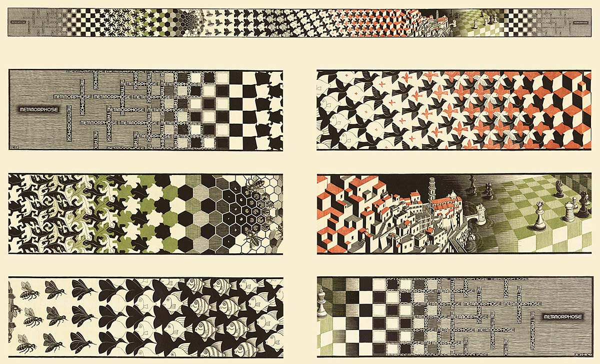

Today I learned about some boilerplate for HTML.
First, there is the DOCTYPE html tag, which tells the
browser which version of html is to be used for rendering. So far, the
doctype for html 5 is the simplest according to the Odin project. Then
follows the html element, which keeps information necessary to
display all of the contents of the page correctly. The head
element follows the previous one. This element holds metadata regarding the
display of the webpage. Here is where we specify the title
for the page. And finally, the head element ends and is followed by the
body element, which actually holds the information which we want
to show the user, such as this blog entry.
You might've noticed that some of the text in the previous paragraph was rendered different than the rest. That is no coincidence. I also learned about different elements which show the text differently, such as headings, which go from 1 to 6, the emphasize element and the strong element.
Now I've also learned how to link one page to another, so now my blog has a proper index which I can use to point towards different entries for different days and I can also add images!

I'm thinking that, in order to practice my html, I will maintain some sort of blog/diary where I will document whatever I'm studying at a given date. That's something I've been wanting to do for a while now, and this is the perfect excuse I believe.
So yeah! This is my first entry in this diary. I hope that I manage to stay consistent lol.
If I'm being honest, I do feel a bit excited to learn more about web dev, because I'm hoping it will give me the tools to do cool stuff which is visual. I'm more used to CLI display, so this is something exciting for me.
It might be a good idea to record some of the things I wish to accomplish on this learning journey I'm partaking. So I will list some ideas which are on my mind (not necessarily in order of complexity lol):
And more...
Now I'm excited!
Finally, I would also like to put in these blogs some stuff related to resolving leetcode problems. I want to give them a more mathematical spin to their resolution, so probably I will also be sharing both the CS/classic perspective and a more mathematical perspective.
Now I'm doubly excited! I can't wait to learn more!
:wq!